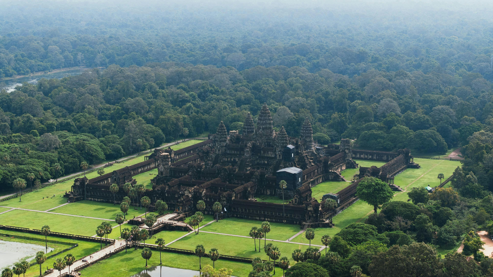
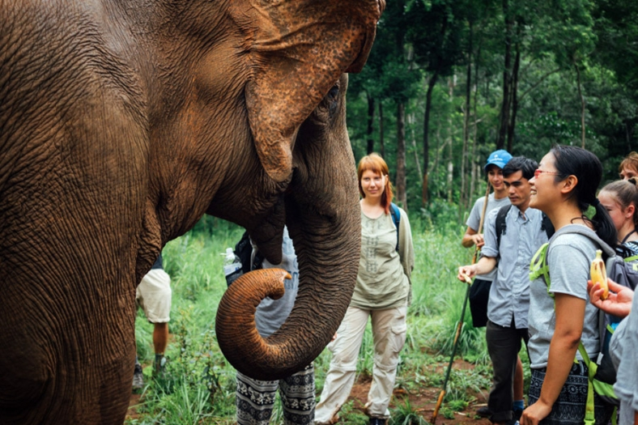

Angkor Wat
Angkor Wat is one of the most famous temples in the world and a symbol of Cambodia. It is known for its ancient stone carvings and sunrise views. Learn more about Angkor Wat

Koh Rong
Koh Rong is an island in the Sihanoukville Province of Cambodia. It’s known for its sandy coves and coral reefs, like those around Koh Rong Pier. Learn more about Koh Rong
Other Places to Visit
Visitors also enjoy places such as Kampot, coastal beaches, and Mondulkiri province,the Cambodia’s largest and wildest province. Learn more about Mondulkiri
